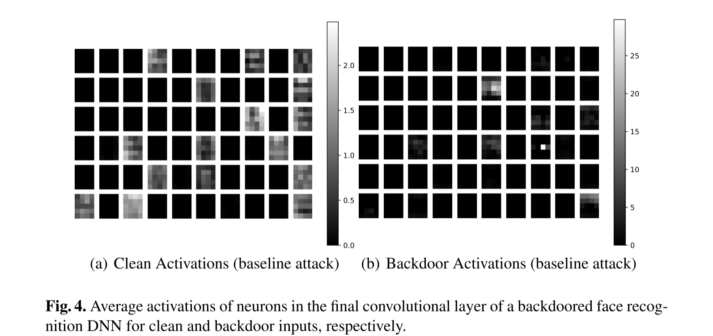
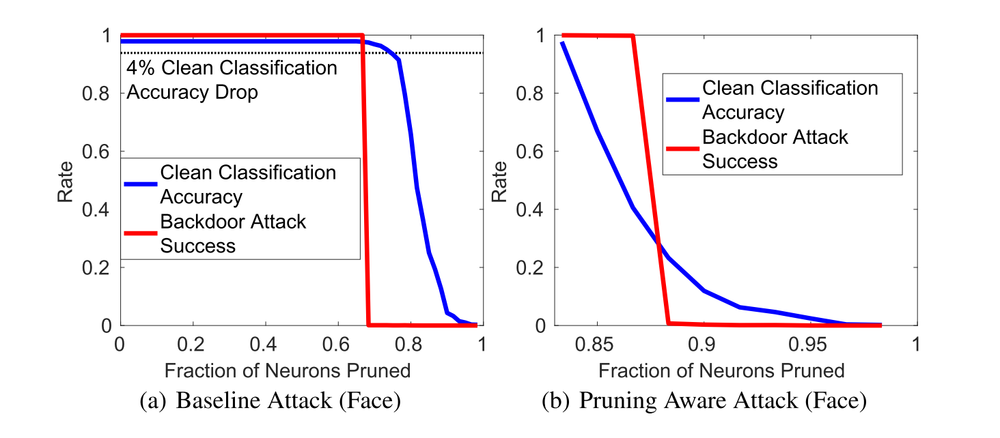
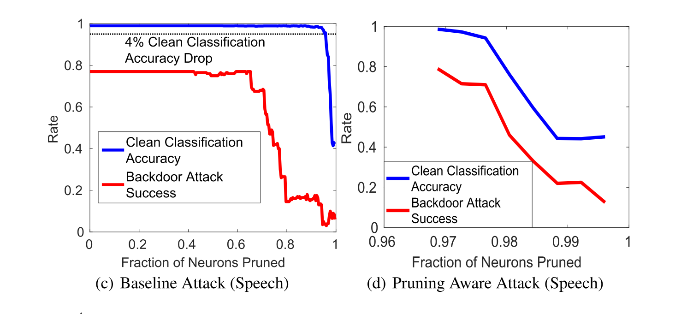
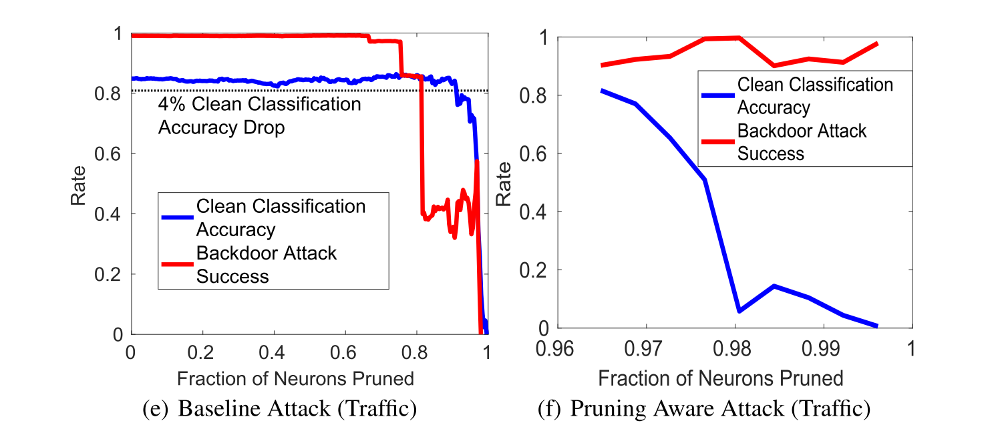
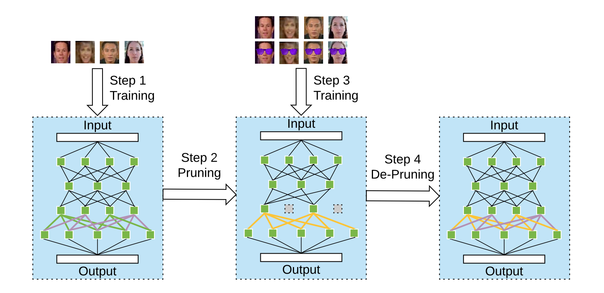
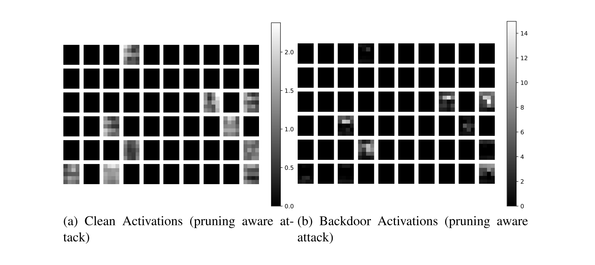

Fine-Pruning: Defending Against Backdooring Attacks on Deep Neural Networks
（ 2018.03.30 arXiv ）
Kang Liu, Brendan Dolan-Gavitt, and Siddharth Garg
New York University, Brooklyn, NY, USA
文章链接：View PDF
工程链接：未开源（可以基于WaNet开源代码中的defend部分来修改使用，我已成功实现哈哈哈！传送门）
推荐阅读指数：❤❤❤❤❤
简介
本文首先评估了针对后门攻击的两种防御方法，“pruning”和“fine-tuning”，发现二者都不能抵御复杂的攻击后门攻击方法。
之后，设计了一种新的“pruning-aware”后门攻击方法，该方法确保干净和后门数据激活相同的神经元，以达到抵御后门攻击的效果。最后，将“pruning”和“fine-tuning”结合，提出了
“fine-pruning”防御方法，它可以有效削弱或者消除后门攻击。
亮点
亮点1：将前人工作中用于减少DNN计算开销的“pruning”方法运用到AI安全方面。
在前人的研究中，“pruning”已经被提出，但是并非是基于安全原因，具体来说，是为了减少评估DNN的计算开销，研究发现，
可以修剪相当大比例的神经元而不影响分类准确性。
Gu.（BadNets一文的作者）等人指出，当带有触发器的数据输入后门网络时，那些在干净数据输入后门网络时处于休眠状态的神经元会被激活。
即后门特征（触发器）与目标标签的映射仅是与部分神经元有关的（后门神经元），这部分神经元在干净数据输入网络时不会被激活，
例如，面部识别网络最终卷积层中神经元的平均激活如下图所示：

这表明，防御者可以通过移除在干净数据输入后门网络时不激活的神经元来消除后门。
“pruning”防御的工作原理如下：防御者使用来自验证数据集的干净数据对后门DNN进行训练，并记录每个神经元的平均激活值。
然后，防御者按照平均激活值由大到小逐步修剪DNN中的神经元，并记录每次迭代中所修剪网络的分类准确性。当在验证数据集上的准确性降低到预定义的阈值以下时，防御终止。
这个过程可以分为三个阶段：在第一阶段修剪的神经元既不被干净数据也不被后门数据激活，对干净分类精度或后门攻击成功率没有影响；
下一阶段修剪被后门激活但不被干净输入激活的神经元，从而在不影响干净分类准确性的情况下减少后门攻击的成功率。
最后一个阶段开始修剪被干净输入激活的神经元，导致干净分类精度下降，此时防御终止。如下图中的a、c、e所示：



亮点2：为了抵御修剪防御，文中精心设计了“pruning-aware”攻击方法。
现在考虑该如何应对这种修剪防御，考虑它的原理，之前的后门模型是将干净分类行为和后门行为投射到了不同的神经元上，
因此我们要抵御修剪防御，就要想办法把这两种行为投射到同一些神经元上。文章提出了"pruning-aware attack"，整个攻击分为四步：
(1)攻击者在干净的训练数据集上训练一个baseline DNN；
(2)攻击者修剪休眠的神经元（修剪的神经元的个数提前设置好）；
(3)攻击者使用中毒数据集重训练修剪后的DNN，如果修剪后的DNN没有能力去学习clean和backdoor行为（如攻击成功率低或者干净数据的分类准确率低），
攻击者会在修剪后的DNN中重新恢复神经元，并再次训练，直到满意为止；
(4)考虑到攻击者只可以修改DNN的权重而不能修改其超参数，
因此攻击者需要将所有被修剪掉的神经元使用特定的weight，bias恢复回去，即“de-prune”修剪后的DNN。

这种攻击的机理是，当防御者尝试修剪DNN时，选择的神经元将是那些在“pruning-aware attack”的第二步中已经修剪过的神经元。
由于攻击者在步骤三中将后门行为编码到未修剪的神经元中，因此防御者的修剪不会影响DNN在后门输入上的行为。即在攻击的步骤二中修剪的神经元
（后来在步骤四中重新恢复的神经元）充当“诱饵”神经元，使“pruning defense”无效。
笔者注：之前的后门攻击直接使用中毒数据集从头训练DNN，最后可能会导致干净分类行为和后门行为分散到不同的神经元上，在本文这种攻击方法下，攻击者先训练一个正常的分类网络，
并把其中休眠的神经元减掉，这会导致干净分类行为占据所有神经元（没有激活的神经元被剪掉了），然后在此基础上再用后门数据集进行训练，这一步就会把后门行为分散到已经具有干净
分类行为的神经元上（因为这里已经没有休眠神经元可用），最后再把剪掉的休眠神经元恢复即可。
上图中的b、d、f绘制了针对面部、语音和交通标志识别网络的干净数据的分类准确度和后门攻击成功率与防御者修剪的神经元的比例的关系。
由修剪感知攻击生成的后门人脸识别DNN的最后一个卷积层的平均激活如下图所示：

亮点3：探索“fine-tuning”防御手段，并创造性地将二者结合，提出“Fine-pruning"防御方法。
“fine-tuning”在面对使用“baseline attack”训练得到的后门DNN并不总是有效。
这是因为：干净数据在后门DNN是上的准确度并不依赖于后门神经元的，它们在干净数据输入时是休眠的。因此，“fine-tuning”过程无法更改后门神经元。
之后，作者将“fine-tuning”和“pruning”结合得到了“Fine-pruning”防御方法，
它结合了二者的优点。首先修剪DNN，然后微调修剪后的网络。
对于“baseline attack”，“pruning” 可以移除后门神经元，“fine-tuning”可以恢复通过“pruning”导致的干净输入的准确度的下降。
其次，“pruning”只是修剪掉了“pruning-aware attac”的诱饵神经元，随后的“fine-tuning”会消除后门，因为被后门输入激活的神经元也会被干净输入激活。
作为结果，使用干净输入的微调会导致涉及后门行为的神经元的权重被更新。
因此，“fine-pruning”对于“baseline attack”和“pruning-aware attack”都有很好的效果，
“fine-tuning”对于“pruning-aware attack”具有较好的效果。